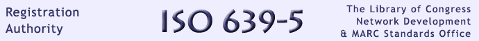

Library of Congress >> Standards
The Library of Congress has been designated the maintenance authority for ISO 639-5 for alpha-3 language codes comprising the International Standard, Codes for the representation of names of languages-- Part 5: Alpha-3 code for language families and groups. ISO 639-2 includes some language groups and language families, but by no means a complete list. The purpose of the code elements for language groups and language families in ISO 639-2 is to provide a means to register the language of a document even when the individual language in question is not included in the code table. This part of ISO 639 supplements the coding of language groups and language families in ISO 639-2. However, the depth and detail of coding in this part of ISO 639 is intended to support the overall language coding of the ISO 639 series of International Standards rather than provide a scientific classification of the languages of the world. The ISO 639-5/RA receives and reviews applications for requesting new language codes and for the change of existing ones according to criteria indicated in the standard. It maintains an accurate list of information associated with registered language codes, processes updates of registered language codes, and distributes them on a regular basis to subscribers and other parties. This is the official site of the ISO 639-5 Registration Authority and thus is the only one authorized by ISO. If you have questions concerning ISO 639-5 please contact us at: Library of Congress For general discussion about ISO language codes, write to: [email protected] |
ISO 639-2 Registration Authority ISO 639-3 Registration Authority |
||
|
|||